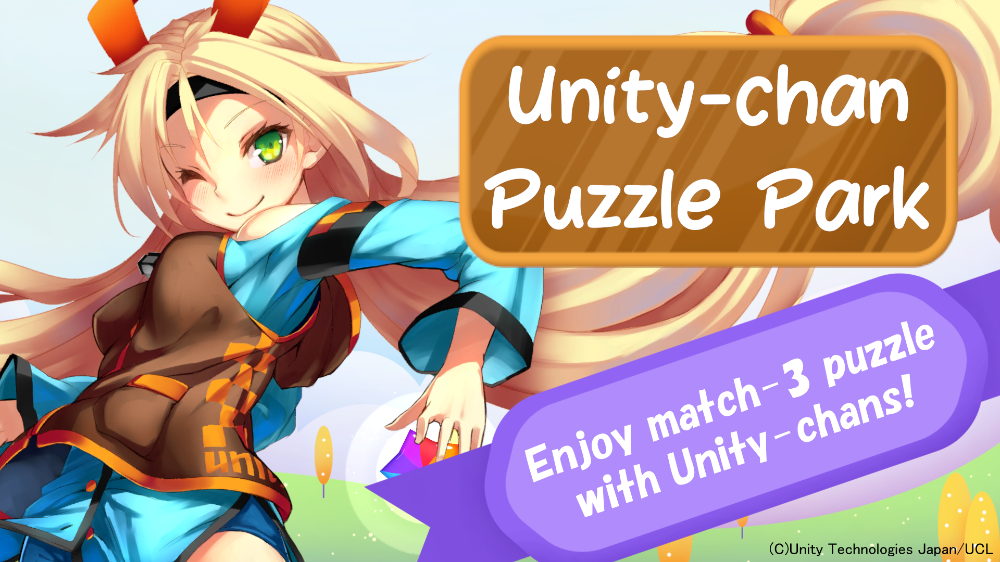
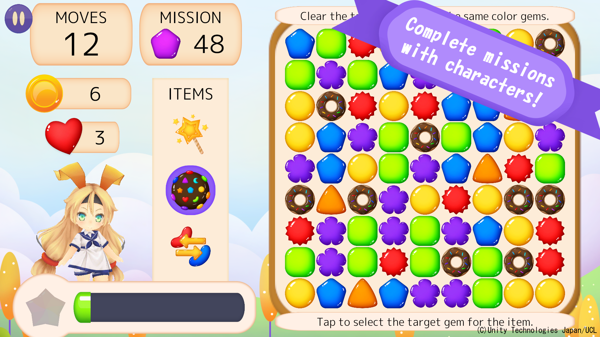
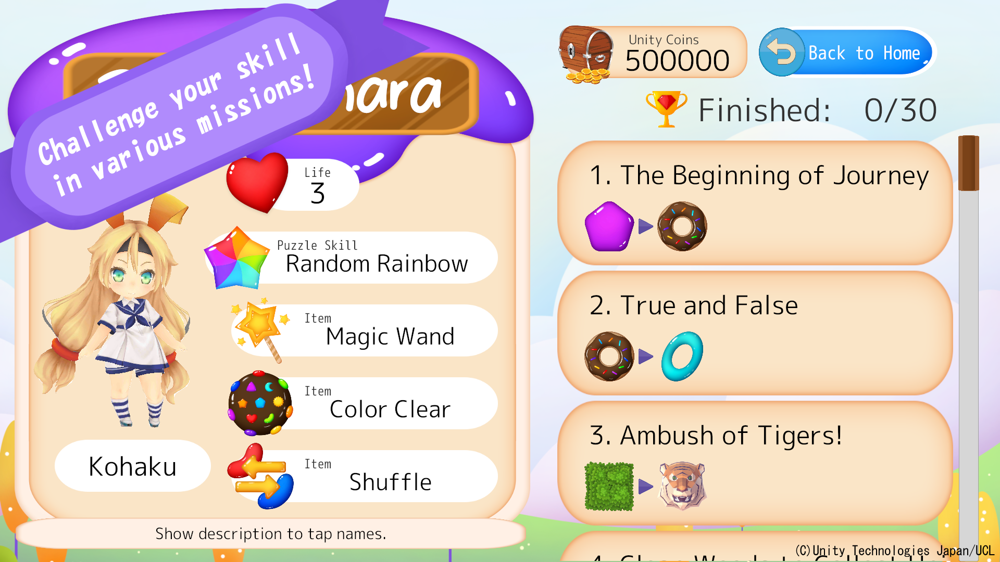
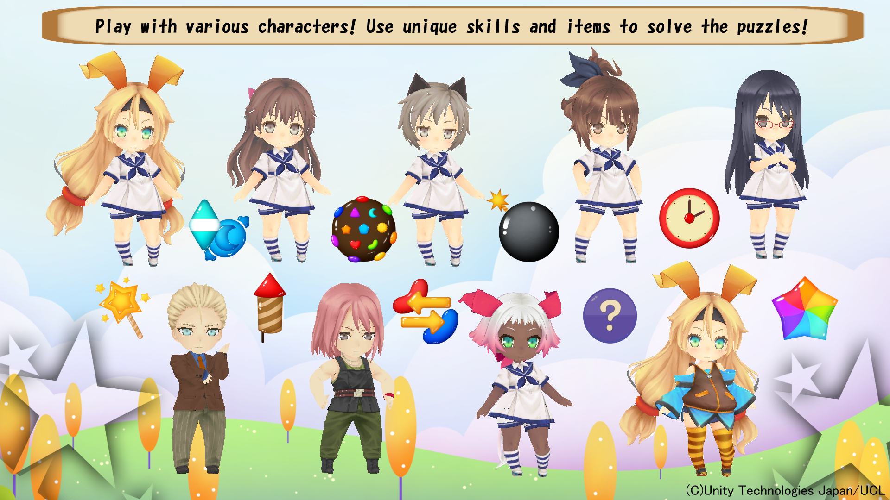
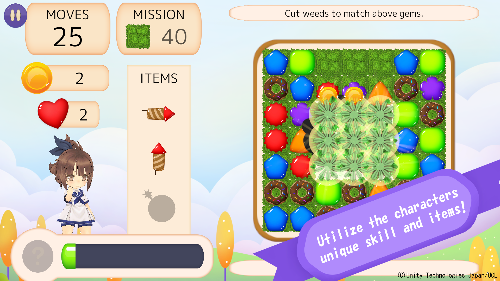

Enjoy match-3 puzzles with Unity-chan!
You can easily play with just your touch operations.
Swipe to move gems, match 3 gems of same color in line to clear the gems.
The objective of the game is to clear the mission set on the stage.
 There are three modes in this game.
You can choose a character from "Unity-chan!" universe who plays the puzzle together.
The characters can use their individual skills and items to support solving puzzles.
Complete puzzle stages, get Unity coins, and unlock characters.
This game supports Japanese and English language.
Character voices are available only in Japanese.
 Things that are "in" this game. (Features)
Things that are "not in" this game. (Restrictions)
This game is provided under the Unity-chan license terms.
(C) Unity Technologies Japan / UCL
Copyright (C) 2022 Yorkie & Schnauzer. All Rights Reserved.